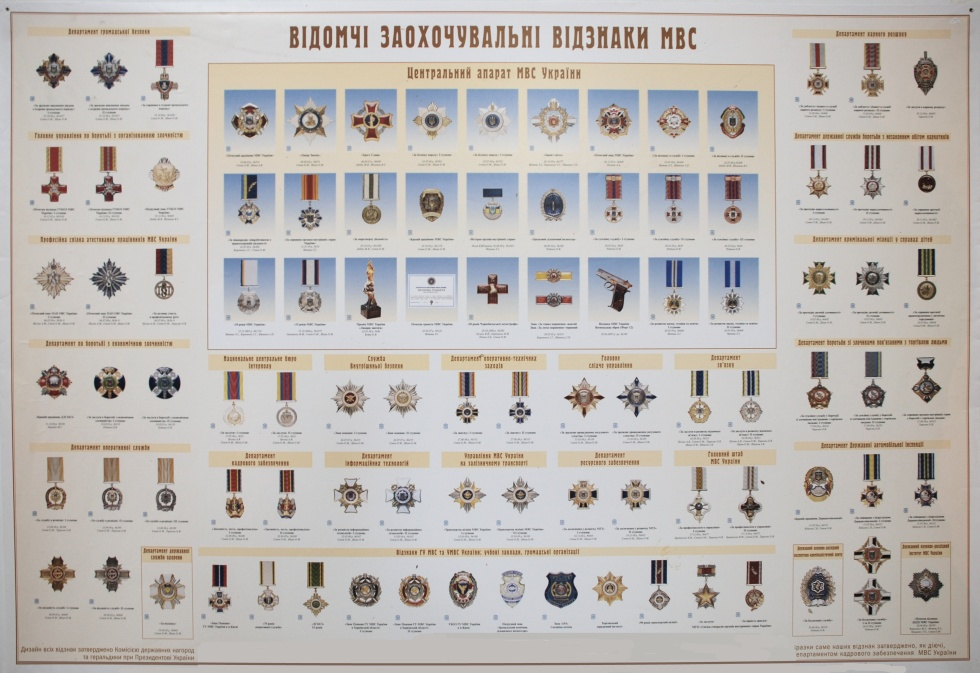

Відзнаки МВС України
- Положення про відомчі заохочувальні відзнаки Міністерства внутрішніх справ України.
I. Загальні положення
1.1. Це Положення визначає перелік установлених МВС України відомчих заохочувальних відзнак, якими нагороджуються особи рядового та начальницького складу органів внутрішніх справ, військовослужбовці внутрішніх військ МВС України, працівники системи МВС України, працівники підприємств, установ, організацій, підпорядкованих МВС України, а також вищезазначені особи після виходу на пенсію, порядок представлення до нагородження, підготовки документів та вручення відомчих заохочувальних відзнак.
1.2. У Міністерстві внутрішніх справ України встановлені такі відомчі заохочувальні відзнаки (далі - відзнаки):
Подяка;
Грамота;
Почесна грамота;
нагрудний знак "За відзнаку в службі";
нагрудний знак "За відвагу в службі";
нагрудний знак "За безпеку народу";
медаль "10 років сумлінної служби";
медаль "15 років сумлінної служби";
медаль "20 років сумлінної служби";
медаль "Ветеран служби".
Вищою відзнакою Міністерства внутрішніх справ України є нагрудний знак "За безпеку народу".
1.3. Нагородження відзнаками здійснюється послідовно відповідно до їх значущості в такому порядку:
Подяка;
Грамота;
Почесна грамота;
нагрудний знак "За відзнаку в службі";
нагрудний знак "За безпеку народу".
1.4. Подякою нагороджуються особи рядового і начальницького складу органів внутрішніх справ, військовослужбовці внутрішніх військ МВС України за високі досягнення в службовій та військовій підготовці, ініціативу та наполегливість, а також працівники системи МВС України, працівники підприємств, установ, організацій, підпорядкованих МВС України, за сумлінне ставлення до виконання своїх обов'язків.
1.5. Грамотою нагороджуються особи рядового і начальницького складу органів внутрішніх справ, військовослужбовці внутрішніх військ МВС України за багаторічну плідну працю, професіоналізм, досягнення високих показників у службовій діяльності, а також працівники системи МВС України, працівники підприємств, установ, організацій, підпорядкованих МВС України, за зразкове виконання службових обов'язків, тривалу і плідну працю.
1.6. Почесною грамотою нагороджуються особи рядового і начальницького складу органів внутрішніх справ, військовослужбовці внутрішніх військ МВС України за зразкове виконання своїх обов'язків, особисту ініціативу і самовідданість, виявлені при виконанні службового та військового обов'язку, а також працівники системи МВС України, працівники підприємств, установ, організацій, підпорядкованих МВС України, за високий професіоналізм у виконанні службових обов'язків, тривалу і плідну працю.
1.7. Нагрудним знаком "За відзнаку в службі" нагороджуються особи рядового і начальницького складу органів внутрішніх справ, військовослужбовці внутрішніх військ МВС України за досягнення високих показників у службі та бойовій підготовці, особисту мужність, сміливі і самовіддані дії, виявлені при виконанні службового або військового обов'язку.
1.8. Нагрудним знаком "За відвагу в службі" нагороджуються особи рядового і начальницького складу органів внутрішніх справ, військовослужбовці внутрішніх військ МВС України виключно за особисту мужність і відвагу в боротьбі зі злочинністю, відданість Присязі, високий професіоналізм, ініціативу і наполегливість у розкритті особливо тяжких резонансних злочинів, самовіддані дії в стані ризику для життя або в разі отримання поранення під час охорони громадського порядку чи затримання небезпечних злочинців.
Нагородження відзнакою може бути здійснено посмертно.
1.9. Нагрудним знаком "За безпеку народу" нагороджуються особи начальницького складу органів внутрішніх справ, військовослужбовці внутрішніх військ МВС України, працівники системи МВС України, які мають вислугу (стаж роботи) в системі МВС України понад 10 років (у календарному обчисленні), за досягнення високих показників у службовій діяльності, особисту мужність, сміливі і самовіддані дії, виявлені при виконанні службового або військового обов'язку.
1.10. Медалями "10 років сумлінної служби", "15 років сумлінної служби", "20 років сумлінної служби" нагороджуються особи начальницького складу органів внутрішніх справ та військовослужбовці внутрішніх військ МВС України, які сумлінно ставляться до виконання службових обов'язків і станом на 20 грудня поточного року мають вислугу (у календарному обчисленні):
10 років - медаллю "10 років сумлінної служби";
15 років - медаллю "15 років сумлінної служби";
20 років - медаллю "20 років сумлінної служби".
Нагородження відзнакою здійснюється з нагоди Дня міліції.
До нагородження відзнакою представляються особи, які позитивно характеризуються і сумлінно виконують службові обов'язки.
До вислуги років зараховується служба в Збройних Силах України, інших військових формуваннях, утворених відповідно до законів України, міністерствах, інших центральних органах виконавчої влади, правоохоронних органах.
1.11. Медаллю "Ветеран служби" нагороджуються особи начальницького складу органів внутрішніх справ та військовослужбовці внутрішніх військ МВС України, які мають вислугу в органах внутрішніх справ 25 років і більше (у календарному обчисленні), за багаторічну бездоганну службу, підвищення ефективності роботи органів внутрішніх справ, високий рівень організації оперативно-службової діяльності підлеглих працівників, вагомі особисті досягнення в боротьбі зі злочинністю та охороні громадського порядку, умілу організацію ефективної діяльності підпорядкованих органів і підрозділів внутрішніх справ, військових частин та з'єднань внутрішніх військ МВС України.
1.12. Відзнаками, які зазначені в пунктах 1.4 - 1.10 цього розділу, можуть нагороджуватися особи, що зазначені у пункті 1.1 цього розділу, після виходу на пенсію, за вагомий особистий внесок у зміцнення законності і правопорядку, умілу організацію роботи у сфері боротьби зі злочинністю, захисту прав і свобод громадян, інтересів держави та високий професіоналізм.
1.13. Про нагородження відзнакою видається відповідний наказ Міністерства внутрішніх справ України за підписом Міністра внутрішніх справ України або особи, яка виконує його обов'язки.
1.14. Гранична кількість відзначених протягом календарного року не може перевищувати:
Подякою - 40 тисяч осіб;
Грамотою - 40 тисяч осіб;
Почесною грамотою - 30 тисяч осіб;
нагрудним знаком "За відзнаку в службі" - 10 тисяч осіб;
нагрудним знаком "За відвагу в службі" - 1,5 тисячі осіб;
нагрудним знаком "За безпеку народу" - 3 тисячі осіб;
медаллю "10 років сумлінної служби" - 25 тисяч осіб;
медаллю "15 років сумлінної служби" - 20 тисяч осіб;
медаллю "20 років сумлінної служби" - 10 тисяч осіб;
медаллю "Ветеран служби" - 12 тисяч осіб.
II. Порядок представлення до нагородження
2.1. Висунення на відзнаку здійснюється в органі або підрозділі внутрішніх справ, де проходять службу (працюють) особи, які пропонуються для заохочення.
При розгляді кандидатів на заохочення повинні враховуватися відповідні рішення колегій або кадрових комісій головних управлінь, управлінь МВС України, Головного управління внутрішніх військ МВС України, учених рад вищих навчальних закладів системи МВС України та науково-дослідних установ МВС України.
2.2. Стосовно особи, яка висувається на нагородження, складається нагородний лист (додаток 1) та біографічна довідка (додаток 2).
Нагородний та супровідний листи, що надсилаються до МВС України, підписуються виключно керівником органу чи підрозділу внутрішніх справ або особою, яка виконує його обов'язки, та скріплюються гербовою печаткою.
2.3. У нагородному листі зазначається:
2.3.1. Стосовно осіб рядового і начальницького складу органів внутрішніх справ, військовослужбовців внутрішніх військ МВС України - відомості про особисту участь особи в розкритті тяжких, групових та інших злочинів, у звільненні заручників та знешкодженні злочинців, в охороні громадського порядку, про сміливі та рішучі дії при затриманні правопорушників, членів злочинних угруповань, кількість завершених кримінальних проваджень, які були відкриті за особливо тяжкими і резонансними злочинами, інші результати службової діяльності, досягнення яких є підставою для нагородження.
2.3.2. Стосовно керівників органів і підрозділів внутрішніх справ (від начальника відділення й вище) - крім особистих позитивних характеристик, також відомості про стан дисципліни та законності в очолюваному органі чи підрозділі, роль підлеглих у співпраці з органами виконавчої влади та взаємодії із засобами масової інформації, ступінь довіри і поваги населення до них особисто і керівництва підрозділів у цілому, рівень їх авторитету як керівників служб або органів чи підрозділів серед підлеглих.
2.3.3. Стосовно осіб після виходу на пенсію, - відомості про час проходження служби (роботи) в органах внутрішніх справ, а також про особистий внесок у забезпечення охорони громадського порядку, надання дієвої допомоги в попередженні та розкритті злочинів, сприяння в роботі міліції із захисту прав і свобод громадян, інтересів держави, умілу організацію діяльності ветеранської організації щодо соціального захисту працівників та ветеранів органів внутрішніх справ, іншу діяльність, яка є підставою для нагородження.
2.4. За достовірність відомостей, зазначених у нагородних матеріалах, дотримання порядку, форми і строку подання відповідає керівник, який вносив пропозицію щодо нагородження та підписав відповідний нагородний лист.
Оформлення нагородного листа та інших визначених цим Положенням документів покладається на керівників підрозділів кадрового забезпечення МВС України, головних управлінь, управлінь МВС України, Головного управління внутрішніх військ МВС України, учених рад вищих навчальних закладів системи МВС України та науково-дослідних установ МВС України.
2.5. Нагородні матеріали надсилаються до МВС України, погоджуються в зацікавлених структурних підрозділах та виносяться на розгляд Нагородної комісії Міністерства, яка приймає остаточне рішення про нагородження кандидата.
2.6. Нагородні листи стосовно осіб, які пропонуються для нагородження відзнаками - медалями "10 років сумлінної служби", "15 років сумлінної служби", "20 років сумлінної служби" та "Ветеран служби", до МВС України не надсилаються, а долучаються до особової справи працівника.
Списки працівників органів та підрозділів внутрішніх справ головного управління, управління МВС України для нагородження відзнаками - медалями МВС України (додаток 3) подаються щороку до 15 листопада до Департаменту кадрового забезпечення.
Департамент кадрового забезпечення здійснює опрацювання отриманих матеріалів і в строк до 20 грудня доповідає керівництву МВС України проект відповідного наказу.
2.7. Пропозиції до проектів наказів МВС України про заохочення кожного року подаються в такі строки:
до 15 лютого
- стосовно працівників органів та підрозділів внутрішніх справ, військовослужбовців внутрішніх військ МВС України, осіб після виходу на пенсію, працівників системи МВС України, працівників підприємств, установ, організацій, підпорядкованих МВС України, які брали участь у бойових діях на територіях інших держав, що приурочується до Дня вшанування учасників бойових дій на території інших держав;
до 23 лютого
- стосовно працівників органів та підрозділів внутрішніх справ, військовослужбовців внутрішніх військ МВС України, осіб після виходу на пенсію, працівників системи МВС України, працівників підприємств, установ, організацій, підпорядкованих МВС України, що приурочується до Дня захисника Вітчизни;
до 8 березня
- стосовно жінок, які проходять службу (працюють) в органах та підрозділах внутрішніх справ, жінок - працівників органів внутрішніх справ після виходу на пенсію, що приурочується до Міжнародного дня прав жінок і миру;
до 26 березня
- стосовно військовослужбовців внутрішніх військ МВС України, що приурочується до Дня внутрішніх військ;
до 26 квітня
- стосовно працівників органів та підрозділів внутрішніх справ, військовослужбовців внутрішніх військ МВС України, осіб після виходу на пенсію, працівників системи МВС України, працівників підприємств, установ, організацій, підпорядкованих МВС України, що приурочується до дня Чорнобильської трагедії;
до 29 травня
- стосовно працівників органів та підрозділів внутрішніх справ, військовослужбовців внутрішніх військ МВС України, осіб після виходу на пенсію, працівників системи МВС України, працівників підприємств, установ, організацій, підпорядкованих МВС України, що приурочується до Міжнародного дня миротворців Організації Об'єднаних Націй;
до 28 червня
- стосовно працівників органів та підрозділів внутрішніх справ, військовослужбовців внутрішніх військ МВС України, осіб після виходу на пенсію, працівників системи МВС України, працівників підприємств, установ, організацій, підпорядкованих МВС України, що приурочується до Дня Конституції України;
до 24 серпня
- стосовно працівників органів та підрозділів внутрішніх справ, військовослужбовців внутрішніх військ МВС України, осіб після виходу на пенсію, працівників системи МВС України, працівників підприємств, установ, організацій, підпорядкованих МВС України, що приурочується до Дня незалежності України;
до 20 грудня
- стосовно працівників органів та підрозділів внутрішніх справ, військовослужбовців внутрішніх військ МВС України, осіб після виходу на пенсію, працівників системи МВС України, працівників підприємств, установ, організацій, підпорядкованих МВС України, що приурочується до Дня міліції;
незалежно від строку за ініціативи Міністра внутрішніх справ України або особи, яка виконує його обов'язки
- стосовно працівників органів та підрозділів внутрішніх справ, військовослужбовців внутрішніх військ МВС України, осіб після виходу на пенсію, працівників системи МВС України, працівників підприємств, установ, організацій, підпорядкованих МВС України.
2.8. Особи, які брали безпосередню участь у розкритті злочинів, виявили мужність, сміливість під час затримання небезпечних злочинців, самовіддано діяли в стані ризику для життя, висуваються позачергово на відзначення відомчими заохочувальними відзнаками керівниками органу та підрозділу внутрішніх справ.
2.9. Керівниками структурних підрозділів апарату Міністерства внутрішніх справ України пропозиції щодо заохочення працівників органів та підрозділів внутрішніх справ погоджуються з керівництвом МВС України і подаються до Департаменту кадрового забезпечення для підготовки матеріалів на розгляд Нагородної комісії МВС України.
2.10. Нагородні листи та інші документи щодо нагородження осіб начальницького складу органів внутрішніх справ, військовослужбовців внутрішніх військ МВС України, працівників органів внутрішніх справ після виходу на пенсію, працівників системи МВС України, працівників підприємств, установ, організацій, підпорядкованих МВС України, подані з порушенням вимог цього Положення, розгляду не підлягають.
2.11. Накази про заохочення відзнаками спеціальних підрозділів оформлюються в порядку, установленому для ведення таємного діловодства.
III. Порядок вручення відзнак
3.1. Нагородження відзнаками здійснюється згідно з відповідними наказами Міністерства внутрішніх справ України за підписом Міністра внутрішніх справ України або особи, яка виконує його обов'язки.
3.2. Вручення відзнаки здійснюється в урочистій обстановці Міністром внутрішніх справ України або особою, яка виконує його обов'язки, чи за його дорученням керівниками структурних підрозділів апарату МВС України, начальниками головних управлінь, управлінь МВС України, начальником Головного управління - командувачем внутрішніх військ МВС України, ректорами вищих навчальних закладів МВС України, керівниками науково-дослідних установ МВС України або особами, які виконують їх обов'язки.
Нагородженому нагрудним знаком або медаллю разом з відзнакою вручається відповідне посвідчення.
Відомості про нагородження вносяться до особової справи та трудової книжки працівника.
3.3. У разі нагородження особи посмертно відзнака та документ, що посвідчує нагородження нею, передаються сім'ї нагородженої особи.
3.4. Працівники органів та підрозділів внутрішніх справ представляються до наступного нагородження нагрудними знаками ("За відзнаку в службі", "За безпеку народу") не раніше ніж через два роки після попереднього нагородження, за винятком представлення до нагородження нагрудним знаком "За відвагу в службі" (без урахування нагородження відзнаками - медалями "10 років сумлінної служби", "15 років сумлінної служби", "20 років сумлінної служби" та "Ветеран служби").
Нагородження одним і тим же нагрудним знаком повторно не здійснюється.
Нагородження повторно Подякою, Грамотою, Почесною грамотою протягом одного року не здійснюється.
3.5. У разі втрати відзнаки дублікат відзнаки не видається.
3.6. Про вручення нагородженій особі відзнаки складається протокол вручення (передачі) відомчої заохочувальної відзнаки Міністерства внутрішніх справ України (додаток 4), що підписується особою, яка її вручила, та скріплюється гербовою печаткою органу. Цей протокол протягом тижня надсилається до Департаменту кадрового забезпечення і зберігається у відповідних справах.
3.7. Відзнаки і посвідчення до них після смерті нагородженого залишаються в його родині.
3.8. Позбавлення відзнаки здійснюється наказом Міністерства внутрішніх справ України за підписом Міністра внутрішніх справ України або особи, яка виконує його обов'язки, у разі засудження відзначеного за скоєння злочину згідно з вироком суду, який набрав законної сили.
3.9. Відзнаки у вигляді медалей носяться з лівого боку грудей і розміщуються після знаків державних нагород України та іноземних державних нагород. За наявності в особи декількох медалей, зазначених у пункті 1.2 розділу I цього Положення, носиться лише та, що була вручена останньою.
3.10. Відзнаки у вигляді нагрудних знаків носяться з правого боку грудей і розміщуються нижче знаків державних нагород України та іноземних державних нагород у такій послідовності: "За безпеку народу", "За відвагу в службі", "За відзнаку в службі".
За наявності в особи декількох нагрудних знаків носиться не більше трьох таких знаків.
3.11. Замість відзнак нагороджена особа може носити планки до них, які розміщуються після планок до державних нагород України та іноземних державних нагород.
